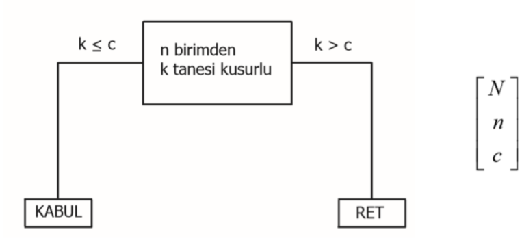
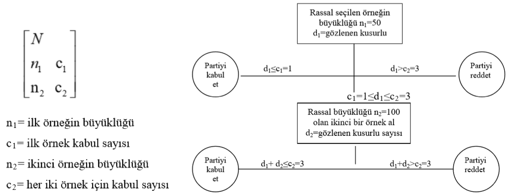
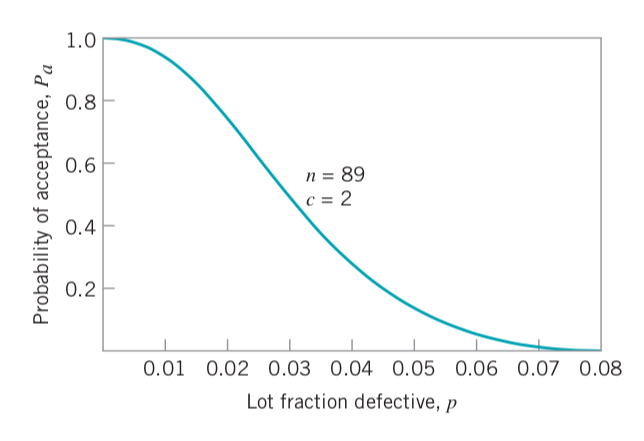
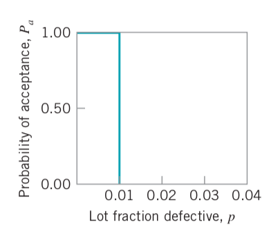
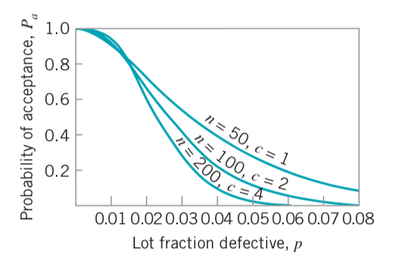
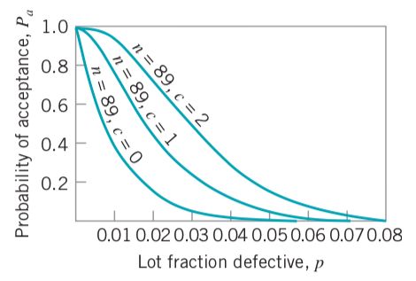
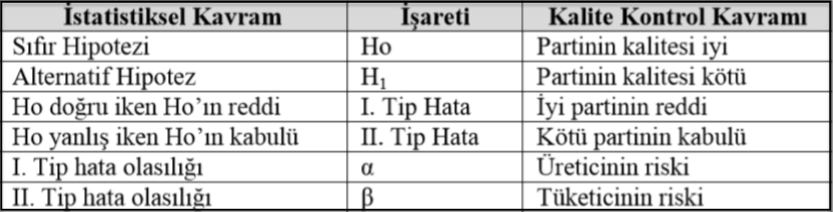
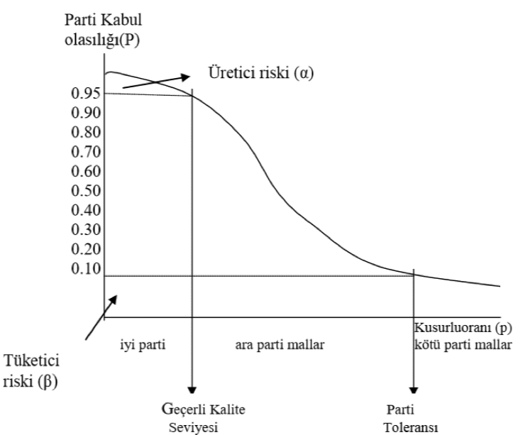

Bölüm 12 Kabul Örneklemesi
Hammadde, yarı mamul veya üretimi tamamlanmış nihai ürünün kabul/red kararının verilebilmesi için kullanılan bir yaklaşımdır. Kabul örneklemesi muayene ve ürünler hakkında karar verme işlemi ile ilgili en eski kalite güvencesi esaslarından biridir. 1930 ve 1940’lı yıllarda, kabul örneklemesi SQC alanında temel konulardan biriydi ve esasen muayene amaçlı kullanılmaktaydı. Son yıllarda, deney tasarımı yöntemi kullanımı yoluyla üreticilerin proses performansını arttırmak tipik uygulamalardır ve esas kalite güvencesi aracı olarak kabul örneklemesine fazla bağımlı kalınmamaktadır.
Tipik bir kabul örneklemesi örneği; bir şirket, bir tedarikçiden ürün alır. Bu ürün genellikle firma içindeki üretim prosesinde kullanılacak bir ham malzemedir. Partiden örnek alınır ve örnekteki birimlerin bazı kalite karakteristikleri muayene edilir. Bu örnekten elde edilen bilgiye dayanarak, partinin ne şekilde değerlendirileceğine karar verilir. Karar, partinin kabulü veya reddi şeklindedir. Bu işlem parti hakkında hüküm verme işlemi olarak da adlandırılır. Kabul edilen partiler üretim bandına gönderilir, reddedilen partiler tedarikçiye geri gönderilir veya parti üzerinde başka bir işlem yapmak üzere ayrı bir yerde bekletilir.
Kabul örneklemesinin girdi muayenesine ait bir faaliyet gibi görünmesinin yanında, örnekleme metodlarının diğer kullanım alanları da mevcuttur. Örneğin, bir üretici, üretimin çeşitli aşamalarında sıkça örnekleme yaparak ürününü muayene yoluna gidebilir. Kabul görmüş partiler üretimin bir sonraki aşamasına gönderilirken, reddedilen partiler, ya düzeltme işlemine uğratılır ya da kullanım dışı bırakılır.
Kabul örneklemesinin amacı, parti kalitesi hakkında bir tahminde bulunmak değil, partiler hakkında bir hüküm vermektir. Kabul örneklemesi planlarının çoğu, tahmin amaçlı tasarımlanmamaktadır.
Kabul örneklemesi planları, kalite kontrolün direkt olarak herhangi bir şeklini sağlamaz. Kabul örneklemesi, basitçe partilerin kabul veya reddedilmesi işlemidir. Hatta tüm partilerin aynı kalitede olması durumunda bile, örnekleme, bazı partileri kabul bazı partileri reddedecektir. Bu durumda, kabul edilmiş partilerin, reddedilenlerden daha iyi olduğu söylenemez. Proses kontrolleri, kaliteyi kontrol etmek ve sistematik bir şekilde iyileştirmek için kullanılırken, kabul örneklemesi bu amaçlar için kullanılmaz.
Kabul örneklemesinin en etkin kullanımı, ürünün kalitesini muayene etmek işleminden ziyade, bir prosesin çıktısının gereksinimleri karşılayıp karşılamadığından emin olmak üzere tetkik aracı olarak yapıldığındadır.
Genellikle, parti hakkında karar verme işleminde üç yaklaşım söz konusudur;
- Muayene etmeden kabul işlemi,
- %100 Muayene,
- Kabul örneklemesi
Muayene etmeden kabul işlemi, tedarikçinin prosesinin çok iyi olması ve hemen hemen partide hiç hatalı birimin bulunmaması veya hatalı birimleri aramanın ekonomik bir yaptırımı olmaması durumlarında geçerlidir. Ayrıca, ekonomik açıdan önemi az olan partiler için, yeniden üretim maliyeti az olan ürünler için kullanılabilir. Örneğin, tedarikçi proses yeterliliği 3 veya 4 ise kabul örneklemesinin hatalı ürün bulması olanaksızdır.
%100 muayene işlemi, bileşenlerin oldukça kritik ve herhangi bir hatalı bileşenin çeşitli aşamalarda yüksek hata maliyetlerine yol açabileceği veya tedarikçinin proses yeterliliğinin spesifikasyonları karşılamaması durumlarında kullanılır.
Kabul örneklemesi ise aşağıdaki durumlarda faydalıdır;
- Numunelerde hasara yol açan test işlemlerinin kullanılması durumunda,
- %100 muayene işlemine ait maliyetin oldukça yüksek olması durumunda,
- %100 muayene işleminin teknolojik olarak mümkün olamaması veya uzun zaman alarak üretim akışını engellemesi durumunda,
- Tedarikçinin mükemmel bir kalite geçmişine sahip olması durumunda,
- Ürün güvenilirliğine ait risk potansiyelinin bulunması ve tedarikçinin prosesinin yeterli olmasına rağmen ürünün sürekli gözlemlenmesine ait bir programın mevcut olması durumunda.
Avantaj ve Dezavantajlar
Kabul örneklemesi, %100 muayene ile karşılaştırıldığında aşağıdaki avantajlara sahiptir;
- Daha az muayene yapılacak olmasından dolayı daha az maliyetlidir.
- Ürünün taşınması daha az olacağından, hasar azaltılmış olacaktır.
- Üründe hasar oluşturan muayene işlemine uygulanabilir.
- Muayene faaliyetlerinde daha az eleman görevlendirilecektir.
- Muayene hatasına ait miktar, büyük ölçüde azalacaktır.
- Yalnızca hatalı olanların tedarikçiye teslimi yerine partilerin tümünün reddedilmesi, genellikle tedarikçinin kalitesini iyileştirmesi için güçlü bir motivasyonu sağlayacaktır.
Kabul örneklemesi bazı dezavantajlara da sahiptir;
- Kötü partileri kabul etme ve iyi partileri reddetme riski mevcuttur.
- Genellikle ürün hakkında ve ürünün meydana getirildiği proses hakkında az bilgi elde edilebilmektedir.
- Kabul örneklemesi, kabul örnekleme prosedürüne ait planlamaya ve dökümantasyona ihtiyaç duymasına rağmen, %100 muayenede bunlara gerek yoktur.
Düzgün bir kabul örneklemesi planının tasarımı genellikle müşteri tarafından gerekli kılınan gerçek kalite seviyesinin bilinmesine ihtiyaç duymaktadır.
Kabul örneklemesi, %100 örnekleme gibi ekstrem bir koşul ile, hiç örnekleme yapmamak şeklindeki bir yaklaşımın orta noktasıdır. Kabul örneklemesi planı ile bir partinin ayrılması işleminin kalite üzerinde direkt bir kontrolü olmamasına rağmen, bir örnekleme planının, bir tedarikçi tarafından sürekli temin edilen partilere uygulanması ile hem partinin üreticisi hem de müşteri için bir şekilde koruma temin edilmiş olacaktır. Ayrıca, tedarikçinin üretim prosesini iyileştirmesi yönünde ekonomik ve psikolojik bir baskı sağlanmış olacaktır.
12.1 Örnekleme Planı Tipleri
Kabul örneklemesi planları farklı şekillerde sınıflandırılabilir. Temel bir sınıflandırma aşağıdaki şekilde yapılabilir.
- Değişkenler ile oluşturulan planlar
- Niteliksel özellikler ile oluşturulan planlar
Değişkenler sayısal bir cetvel üzerinde ölçülebilen kalite özellikleridir. Niteliksel özellikler ise ‘uygun’ ve ‘uygun olmayan’ şeklinde ifade edilen kalite özellikleridir.
Basit örnekleme planı (Tek örnekleme): partiden rasgele n birimlik bir örnekleme yapmak ve parti hakkında bu örneklemede elde edilen bilgiye göre karar vermek işlemidir. Örneğin, örnek büyüklüğü n ve kabul sayısı c ise, partiden rasgele n birim alınır. Eğer numunede c veya daha az sayıda hatalı varsa parti kabul edilir. Eğer numunede c’den daha fazla sayıda hatalı varsa parti reddedilir.

Çift örnekleme planı: daha karmaşıktır. Başlangıç örneklemesinde elde edilen bilgi doğrultusunda (a) parti kabul edilir, (b) reddedilir veya (c) ikinci bir örnekleme yapılır. Eğer ikinci örnekleme yapılmış ise, ilk ve ikinci örneklerden elde edilen bilgi birleştirilerek partinin kabulü veya reddedilmesi hakkında karara varılır.

Çok Katlı Örnekleme Planı: çift örnekleme planı’nın geliştirilmiş halidir. Parti hakkında karar vermek için ikiden fazla örnekleme yapılması gereklidir. Çok katlı planlarda örnek büyüklükleri, genellikle Tek Örnekleme ve Çift Örnekleme planlarındakilerden daha küçüktür.
Ardışık Örnekleme Planı: çok katlı örnekleme planının geliştirilmiş şeklidir. Birimler, partiden tek tek seçilmekte ve birimin muayenesinden sonra partinin kabulüne, reddine veya yeni bir birimin seçimine karar verilmektedir.
Örnekleme prosedürünün tipinin belirlenmesinde, işin yapılmasına yönelik verimlilik, plan tarafından oluşturulan bilginin şekli, prosedür tarafından gerekli görülen ortalama muayene adedi ve prosedürün üretim organizasyonundaki materyal akışına etkisi göz önüne alınmalıdır.
Örnek büyüklüğü fazla olan örnekleme planları, hem üretici hem de tüketici açısından daha yüksek kalite güvence sağlayacaktır.
12.2 Parti Oluşturma
Partinin ne şekilde oluşturulduğu, kabul örneklemesi planının verimliliğini etkileyebilmektedir. Muayene için parti oluşturmada göz önüne alınması gereken hususlardan bazıları şunlardır.
- Partiler homojen yapıda olmalıdır. (Aynı operatör ile üretim, aynı ham madde ile üretim vb.)
- Küçük partilerden ziyade büyük partiler tercih edilmelidir. (Büyük partileri muayene etmek ekonomik açıdan daha verimlidir.)
- Partiler, hem tedarikçi hem de müşterideki materyal taşıma sistemleri ile uyumlu olmalıdır. (Birimler, taşıma ve yükleme sırasındaki hasarı en aza indirecek şekilde paketlenmiş olmalıdır.)
12.3 Rasgele Örnek Alma
Partiden alınan birimler, rasgele seçilmeli ve partideki tüm birimleri temsil edebilmelidir. Önce, partideki her bir birime numara verilir, daha sonra n adet rasgele sayı belirlenir. Bu tesadüfi sayılarca temsil edilen birimler muayene için ayrılır.
Rasgele örnekleme yapılmaz ise hatalar meydana gelebilir. Örneğin, tedarikçi partinin üst kısmına en iyi parçaları koyabilir, ancak bu iyi parçalar, partinin bütününü temsil etmez ve ancak rassal örnekleme ile bu sorunun üstesinden gelinebilir.
Numaralandırmanın mümkün olmadığı durumlarda ise çeşitli teknikler uygulanabilir. Örneğin; bir konteynır için muayene sorumlusu konteynırı farklı katmanlara ayırarak buralardan farklı örnekler alabilir, ya da üç haneli rassal sayı üretilerek en, boy, yükseklik ifade edilebilir, bu koordinatlara denk gelen parça muayene edilebilir.
12.4 Niteliksel Özellikler için Basit Örnekleme Planları
N büyüklüğünde bir partinin muayene işlemini ele alalım. Basit örnekleme planı, örnek büyüklüğü n ve kabul sayısı c ile tanımlanmaktadır. Böylece, eğer parti büyüklüğü \(N=10.000\) ise, örnekleme planı, \(n=89\) ve \(c=2\) olsun. Bu, \(N=10.000\) boyutundaki bir partiden rasgele olarak seçilen \(n=89\) birimin muayene edildiği anlamına gelmektedir ve uygun olmayan veya hatalı birimlerden d adet bulunmuş ise, eğer gözlemlenen hatalı sayısı d, 2 veya daha az olduğunda parti kabul edilecek anlamını taşımaktadır. Eğer d, 2’den büyükse, parti reddedilecektir. Muayene edilen kalite karakteristiği niteliksel olduğundan, örnekteki her bir birim, uygun veya uygun olmayan olarak değerlendirilecektir. Bu işlem, n büyüklüğündeki bir partiden elde edilen bilgiye dayanarak parti hakkında karar verilmesinden dolayı basit örnekleme planı olarak adlandırılır.
12.5 Çalışma Karakteristiği Eğrisi (OC-Operating Characteristic Curve)
Kabul örneklemesi planının performansının önemli bir ölçütü Çalışma Karakteristiği (OC) Eğrisi’dir. Bu eğri, değişen kalite düzeyi (p) karşısında partilerin kabul olasılıklarını (\(P_{a}\)) ifade eder. Başka bir ifade ile, belli bir kalite düzeyindeki bir partinin kabul veya reddedilme olasılığını gösterir. Kabul olasılığı, d’nin c’den daha küçük veya eşit olma olasılığı yani örneklemdeki kusurlu sayısının kabul sayısına eşit ya da daha az olması olasılığıdır.
ve aşağıdaki gibi ifade edilir.
\(P_{a}=P(d\leq c)=\sum_{d=0}^{c}\frac{n!}{d!(n-d)!}p^{d}(1-p)^{n-d}\)
Çift katlı örnekleme planı için \(P_{a}\),
\(P_{a}=P_{a}^{I}+P_{a}^{II}\)
Basit örnekleme planı için kabul olasılıkları (\(n=89, c=2\))
| Kalite düzeyi, p | Kabul olasılığı \(P_{a}\) |
|---|---|
| 0.005 | 0.9897 |
| 0.010 | 0.9397 |
| 0.020 | 0.7366 |
| 0.030 | 0.4985 |
| 0.040 | 0.3042 |
| 0.50 | 0.1721 |
| 0.60 | 0.0919 |
| 0.70 | 0.0468 |
| 0.80 | 0.023 |
| 0.90 | 0.0109 |
Basit örnekleme planı \(n=89, c=2\) için OC eğrisi;

Eğer, örnekleme planı \(n=89, c=2\) ise ve parti %2 hatalı ise, kabul olasılığı 0.74’dür. Bu değer, bu örnekleme planı kullanıldığında %2 hatalı üretim yapan bir prosesten 100 partinin alınması durumunda, partilerin 74’ünün kabul ve 26’sının reddedileceği anlamına gelmektedir.
Bir örnekleme planı için OC eğrisi, üretici ve tüketici riskinin ölçülmesini sağlar.
İdeal OC eğrisi;

İyi ve kötü partileri kusursuzca ayıran bir örnekleme planına ait ideal OC eğrisi yanda görülmektedir. Bu şekildeki ideal bir OC eğrisi pratikte elde edilemez. Gönderilen her parti malın aynı kalite düzeyinde olması yani, aynı oranda kusurlu parça içermesi beklenemez. Dolayısıyla, bir örnekleme planında değişen kalite seviyeleri p (kusurlu oranı) karşısında partilerin kabul olasılıkları P(a) değişimini OC eğrisi ile izlemek mümkündür.. İdeal eğrinin şekline, örnek büyüklüğünü arttırmakla yaklaşılabilir. Böylece iyi ve kötü partileri birbirinden ayırma hassasiyeti, örnekleme planında artan örnek büyüklüğü ile artar. OC eğrisinin eğitimi ne kadar büyükse, ayırma gücü o kadar büyüktür. Genellikle, kabul sayısını değiştirmek, OC eğrisinin eğimini önemli ölçüde değiştirmez. Kabul sayısı azaldığında OC eğrisi sola kayar.
Eğer üretici ve tüketici riskleri sıfır olursa bu plan eğrisine şekilde görüldüğü üzere “İdeal OC eğrisi” adı verilir.
Farklı örneklem büyüklükleri için OC eğrileri;

Kabul sayısındaki değişikliğin OC eğrisi üzerindeki etkisi;

12.6 OC Eğrisi Üzerindeki Önemli Noktalar
Kalite mühendisi, OC eğrisi üzerinde belli noktalara önem vermektedir. Tedarikçi, hangi seviyede parti veya proses kalitesinin yüksek bir kabul olasılığını vereceğini bilmek isteyecektir. Örneğin, kabul olasılığını 0.95 noktasında isteyecektir. Bu durumda, partilerin kabulü %95’lik şansa sahiptir. Buna karşılık müşteri, OC eğrisinin diğer kısmına önem verecektir. Başka bir ifade ile, hangi seviyede parti veya proses kalitesinin düşük bir kabul olasılığını verceğini bilmek isteyecektir.
Üretici riski (\(\alpha\)): İyi bir parti malın reddedilme olasılığı. Pratikte genellikle 0.05 alınır ve böylece bir partinin kabul olasılığı 0.95 olur.
Tüketici riski (\(\beta\)): Kötü bir parti malın kabul edilme olasılığı. Pratikte 0.1 alınır. Böylece kötü kalitede bir partinin kabul olasılığı 0.1 olur.
Kabul edilebilir kalite düzeyi (Acceptable Quality Level (AQL)): \(\alpha\) riski ile reddedilme olasılığı bulunan iyi kalitede bir partinin kusurlu parça oranı.
Parti kalite düzeyi toleransı (Lot Tolerance Percent Defective (LTPD)): \(\beta\) riski ile kabul edilme olasılığı bulunan kötü kalitede bir partinin kusurlu parça oranı.
Eşit riskli kalite düzeyi (IQL): Kabul veya red olasılığı eşit, yani %50 olan partinin kusurlu parça oranı


- AQL azaldığında, iyi bir partiyi reddetme ihtimali (\(\alpha\)) de azalır.
- LTPD arttığında, kötü partiyi kabul etme olasılığı (\(\beta\)) azalır.
- AQL üzerine üretici ve tüketicinin anlaşması gerekir ve bu değer kontratlarda müzakere edilen bir husustur.
- Daha düşük bir AQL üreticinin riskini azaltır fakat aynı zamanda imalatta daha sıkı bir kontrol gerektirir. Bu nedenle kalite özelliklerini belirlemede ekonomik analiz önemlidir.
- \(\alpha\)= %5 ve AQL= %2 olması, %2 kusurlu içeren 100 partiden 95’inin kabul, 5’inin reddedileceği anlamına gelmektedir.
- \(\beta\)= %10 ve LTPD= %5 olması, %5 kusurlu içeren 100 partiden 90’ının red 10’unun kabul edileceği anlamına gelmektedir.
- Örnek büyüklüğü arttıkça üretici riski (\(\alpha\)) artar, tüketici riski (̆\(\beta\)) azalır.